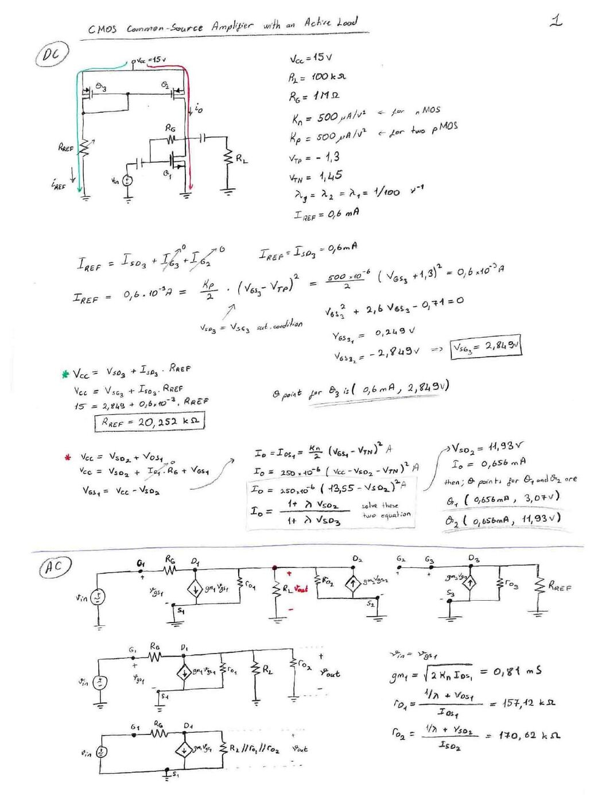
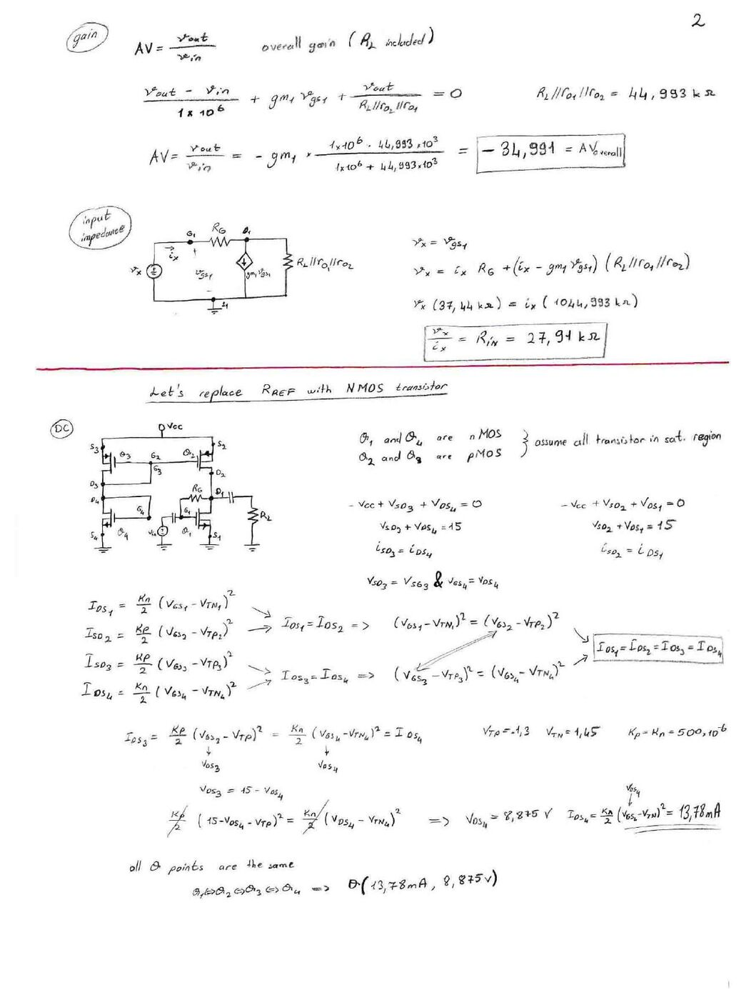
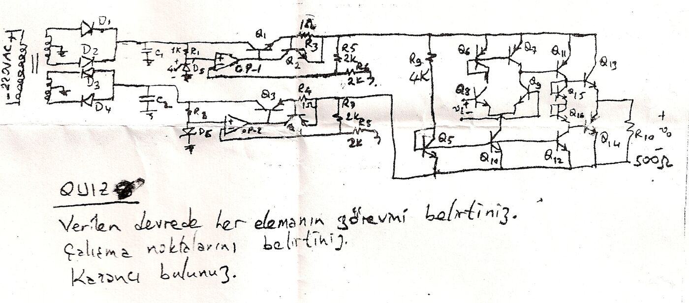

· EEM311
EEM311 Electronics II: 2006 Homework, Solution of the CMOS Common-Source Amplifier with an Active Load, and a Multi-Stage Amplifier with Power Supply Question
EEM311 – Elektronik II · 19.12.2006 · 16.10.2026
This post contains two documents from the fall 2006 semester of the EEM311 Electronics II course at Başkent University: a three-page handwritten homework solution on a CMOS common-source amplifier with an active load (December 2006, scanned; the author's name does not appear in the document) and an "Electronics homework / Quiz" page with a question posed over a hand-drawn circuit (scan dated 21 December 2006). The original scans can be downloaded as a ZIP at the end of the post.
CMOS Common-Source Amplifier with an Active Load
Circuit and values
M₁ (NMOS) is a common-source amplifier; its load is a current mirror (active load) formed by the PMOS transistors M₂ and M₃. The reference current flows from M₃ through R_REF to ground. A feedback resistor R_G connects the gate and the drain of M₁ (at DC, gate = drain); the input v_in is applied to the gate through a coupling capacitor, and the output is taken from the drain through a capacitor to R_L.
- V_CC = 15 V, R_L = 100 kΩ, R_G = 1 MΩ
- K_n = 500 µA/V² (NMOS), K_p = 500 µA/V² (both PMOS)
- V_TP = −1.3 V, V_TN = 1.45 V, λ₁ = λ₂ = λ₃ = 1/100 V⁻¹
- I_REF = 0.6 mA

DC analysis
- I_REF = I_SD3 = (K_p/2)(V_GS3 − V_TP)² = 250·10⁻⁶·(V_GS3 + 1.3)² = 0.6·10⁻³ A (V_SD3 = V_SG3, saturation condition)
- V_GS3² + 2.6·V_GS3 − 0.71 = 0 → V_GS3 = −2.849 V, i.e. V_SG3 = 2.849 V; the Q point of M₃ is (0.6 mA; 2.849 V)
- V_CC = V_SG3 + I_SD3·R_REF → 15 = 2.849 + 0.6·10⁻³·R_REF → R_REF = 20.252 kΩ
- V_CC = V_SD2 + V_DS1, V_GS1 = V_DS1 = V_CC − V_SD2 (no DC current flows through R_G)
- I_O = (K_n/2)(V_GS1 − V_TN)² = 250·10⁻⁶·(13.55 − V_SD2)² and I_O = I_REF·(1 + λV_SD2)/(1 + λV_SD3), solved together: V_SD2 = 11.93 V, I_O = 0.656 mA
- Q points: M₁ (0.656 mA; 3.07 V), M₂ (0.656 mA; 11.93 V)
AC analysis
- v_in = v_gs1, g_m1 = √(2K_n·I_DS1) = 0.81 mS
- r_o1 = (1/λ + V_DS1)/I_DS1 = 157.12 kΩ, r_o2 = (1/λ + V_SD2)/I_SD2 = 170.62 kΩ
- R_L ∥ r_o1 ∥ r_o2 = 44.993 kΩ
- At the output node: (v_out − v_in)/R_G + g_m1·v_gs1 + v_out/(R_L ∥ r_o2 ∥ r_o1) = 0
- A_v = v_out/v_in = −g_m1·(1·10⁶·44.993·10³)/(1·10⁶ + 44.993·10³) = −34.991 (total gain including R_L)
- Input resistance: v_x = i_x·R_G + (i_x − g_m1·v_gs1)(R_L ∥ r_o1 ∥ r_o2) → v_x·(37.44) = i_x·(1044.993 kΩ) → R_in = 27.91 kΩ
Note: The exact solution of the node equation is A_v = −(g_m1 − 1/R_G)·(R_G ∥ 44.993 kΩ) ≈ −(0.81 mS − 1 µS)·43.06 kΩ ≈ −34.8; the −34.991 in the source is a small calculation slip (R_in = 27.91 kΩ is correct).
Replacing R_REF with an NMOS Transistor (Let's replace R_REF with NMOS transistor)
A diode-connected NMOS (M₄) replaces R_REF. M₁ and M₄ are NMOS, M₂ and M₃ are PMOS; all are assumed to be in saturation.

- −V_CC + V_SD3 + V_DS4 = 0 → V_SD3 + V_DS4 = 15, i_SD3 = i_DS4; V_SD3 = V_SG3, V_GS4 = V_DS4
- Similarly V_SD2 + V_DS1 = 15, i_SD2 = i_DS1
- (V_GS1 − V_TN1)² = (V_GS2 − V_TP2)² and (V_GS3 − V_TP3)² = (V_GS4 − V_TN4)² → I_DS1 = I_SD2 = I_SD3 = I_DS4
- (K_p/2)(15 − V_DS4 − V_TP)² = (K_n/2)(V_DS4 − V_TN4)² → in the source V_DS4 = 8.875 V, I_DS4 = (K_n/2)(V_GS4 − V_TN)² = 13.78 mA
- All Q points are the same: Q(13.78 mA; 8.875 V)
AC (third page):
- g_m1 = √(2K_n·I_DS1) = 3.71 mS, r_o1 = r_o2 = (1/λ + V_DS)/I_DS = 7.9 kΩ
- R_L ∥ r_o2 ∥ r_o1 = 3.8 kΩ
- A_v = −g_m1·R_G·(R_L ∥ r_o2 ∥ r_o1)/(R_G + R_L ∥ r_o2 ∥ r_o1) = −3.71·10⁻³·(1·10⁶·3800)/(1·10⁶ + 3800) = −14.05
- R_in = 66.48 kΩ
Note: The sign of V_TP is mixed up in this section. The correct form is V_SG3 − |V_TP| = 15 − V_DS4 − 1.3 = V_DS4 − 1.45, i.e. V_DS4 = 7.575 V and I = 250 µA/V²·(6.125 V)² ≈ 9.38 mA (8.875 V results from taking V_TP = +1.3 V). With these values, g_m1 ≈ 3.06 mS, r_o ≈ 11.5 kΩ, R_L ∥ r_o1 ∥ r_o2 ≈ 5.42 kΩ, A_v ≈ −16.5 and R_in ≈ 57.1 kΩ.
Electronics Homework: Power Supply and Multi-Stage Amplifier (Quiz)
The question given over a hand-drawn circuit:
State the function of each component in the given circuit. State the operating points. Find the gain.

What can be seen in the circuit (as far as it can be read from the drawing):
- Power supply: a transformer connected to the 220 V AC mains, a two-branch rectifier with diodes D₁–D₄, and filter capacitors C₁, C₂ (positive and negative supply).
- Regulators: in each branch, a Zener reference (D₅ at the top, about 4 V, with R₁ = 1 kΩ; D₆ and R₈ at the bottom), OP-1 / OP-2 as the error amplifier, Darlington-connected transistors as the series pass element (Q₁–Q₂ at the top, Q₃ and a second transistor at the bottom), 1 Ω resistors R₃ and R₄ (current limiting), and 2 kΩ resistors (R₅, R₆, R₉ and one 2 kΩ) that feed the output voltage back to the op-amp.
- Amplifier: a current source built with Q₅ and R₉ = 4 kΩ, an input stage consisting of Q₈ (to which v_i is applied) and Q₉, a Q₆–Q₇ current mirror (active load), Q₁₀ and Q₁₂ current sources, and an output stage made up of Q₁₅–Q₁₆ biasing elements together with Q₁₁, Q₁₃ and Q₁₄; load R₁₀ = 500 Ω, output v_o. (Labels are given as far as they can be read from the hand drawing; determining the functions of the components is the question itself.)
The document does not include a solution to this question.